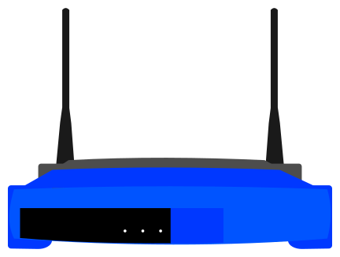

Router Restarter
View Router Restarter Library Source Code
Backstory:
Some time ago, I used to have 2 Linksys WRT54GL routers at home, both of them with custom firmware I installed to them (so that I could extend their range and do other fun stuff with them). One of them had Tomato installed to it and the other one had DD-WRT installed. Towards the end of these routers lives, Wi-Fi connectivity became a problem, requiring them to be restarted at random, at least once or twice a week. However, any devices that were wired to the network would function fine.
In order to solve this problem, I created something that could restart the routers entirely, check if the routers were still accessible through their http interface, and could also turn the Wi-Fi setting of the routers on and off. I decided to only release the library I created to restart these routers. Requests is the only dependency that is required. I no longer use those 2 routers anymore and cannot effectively test/clean up the full project to be released publicly. The full project was a Discord bot that ran on my desktop, which was hardwired to the network. This meant that if the Wi-Fi went down, I could use the mobile data connection of my phone to send commands to the Discord bot running on my desktop, which would then connect to the routers, telling them to restart.
How the POST requests work:
Both Tomato and DD-WRT have CGI Gateway pages that will respond to different commands sent via POST requests. I discovered these commands by using the network tab on Google Chrome's Inspector.
Let's say for example, I wanted to figure out how to restart the DD-WRT router. First, I'd hit the restart button on the router's web interface, and the network tab would show a post request sent to the router's apply.cgi page. Then I'd use the inspector to see the data of the request that was sent, which in this case was: {'action': 'Reboot'}. Then, I'd use python's request library to send a POST request to the router like so:
from requests import post
from requests.auth import HTTPBasicAuth
post(
'http://<ROUTER IP>/apply.cgi',
auth=HTTPBasicAuth('<USERNAME>', '<PASSWORD>'),
data={'action': 'Reboot'}
)
Running this bit of code is functionally identical to pressing the restart button on the web interface, and will restart the router when run.
Tile Icon Credit:
The icon I used for the tile can be viewed here: https://publicdomainvectors.org/en/free-clipart/Linksys-SE2800-wireless-router-vector-image/13560.html
Note that I modified the original SVG image, by changing the color of the antennas to better fit the background color of the tile and I deleted some no longer needed paths as well. The modified SVG is shown at the top of the page, and can also be viewed here.